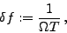

The width of the interval between consecutive frequencies may be specified by the keyword freqspacing.
An alternative method is the automatic determination of the spacing by means of the oversampling ratio. In case of equidistantly sampled time series, the frequency spacing is defined by
| (6) |
|  | (7) |
Example. The sample project limits illustrates the use of the keyword freqspacing, an example for the keyword osratio is provided in the sample project nyos. Both samples use the V photometry of IC4996#89 as input time series. The line
freqspacing 0.001
in the file limits.ini forces SIGSPEC to calculate Fourier amplitudes and sigs for every 0.001 cycles per day. In the file nyos.ini, there is a line
osratio 12
which overrides the default oversampling ratio of 20. Fig.9 compares the standard spacing from Example SigSpecNative, p. ), with the spacings obtained applying the two above modifications.
), with the spacings obtained applying the two above modifications.


Next: Accuracy of MultiSine fits
Up: Input
Previous: Upper frequency limit and
Contents
Piet Reegen
2009-09-23